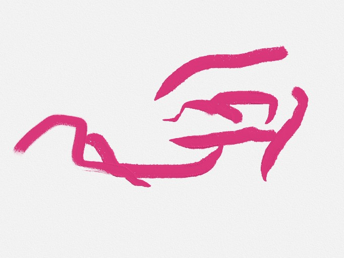

— 01 · Capabilities
本地运行的智能体，支持多轮对话与流式回复。
通过 DHT 自动发现并连接其他 Bolloon 节点，无需中心服务器。
接收和管理文档，支持 DID 签名验证归属。
shell 命令、文件操作、代码分析等，由安全闸门守卫。
自动检查更新、质量门控，持续进化。
— 02 · Colophon

Bolloon（帛龙）—— 一个本地优先、P2P 协作的 AI 智能体平台。它把主动权交还给运行它的那台设备，用 DHT 让节点彼此发现，用 DID 让归属可验证。
项目开源协议 MIT，可自由使用、修改、分发，需保留版权与许可声明。